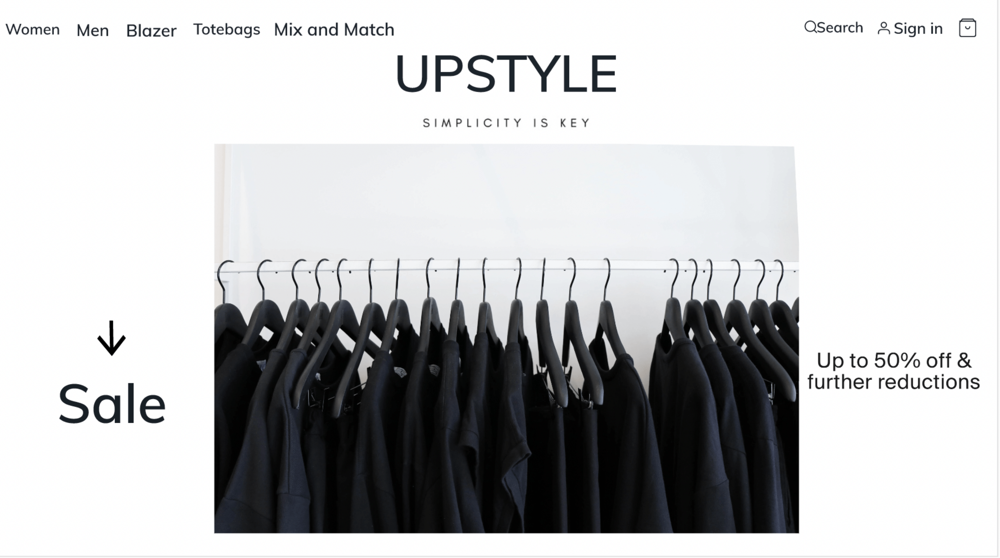
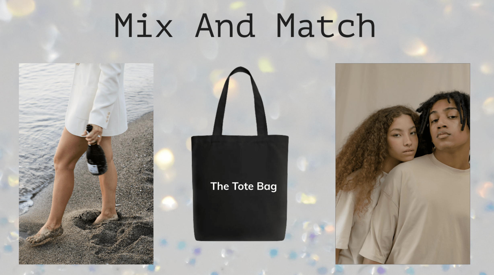
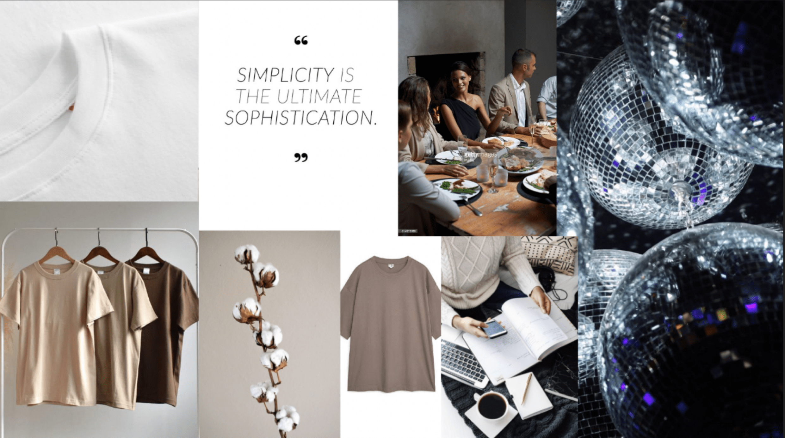

Tema 3. Grundlæggende UX
UPSTYLE



Dette fungerede
De 3 items
Valg af farver
Gennemgang af items
Dette skulle rettes
Konceptet
Placering af koncept
Klikbart flow
I tema 3 havde vi om grundlæggende UX
Vi fik en case hvor vi skulle sælge og designe t-shirts på et website, hertil skulle vi så
designe 2 ekstra items der skulle passe til t-shirten.
Process:
Jeg startede hele processen med at lave et moodboard og finde ud af min stil
til projektet. Derefter fandt jeg ud af hvad de to resterende items skulle være,
jeg valgte en tote bag, samt en blazer. Min ide var
at lave et koncept der hed “Mix and Match” dette skulle være en kollektion
hvor du havde mulighed for at sammensætte forskellige stykker tøj
og asccesories, men ideen var også
at du skulle kunne style disse items til alle lejligheder og samtidig
bruge det tøj du har der hjemme.
Altså du skal kunne mixe og matche dine outfits til alle lejligheder.
I dette projekt fik jeg en grundlæggende forståelse for samspillet
mellem brugere og brugergrænseflader, ydermere lærte jeg også om
værktøjer og metoder jeg kan bruge i min research til mine designvalg.
Jeg lærte også at lave et responsivt design med XD programmet
der var klikbart for brugeren.